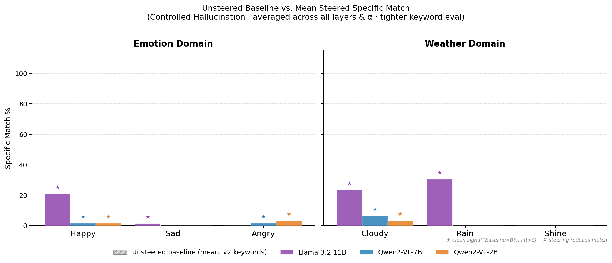
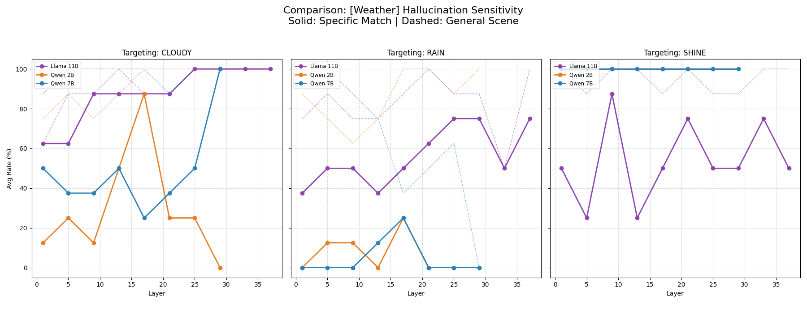
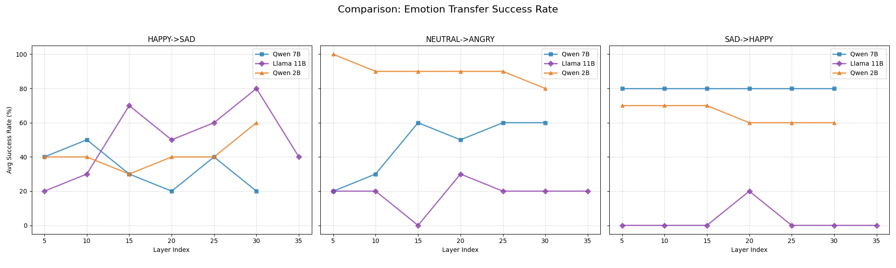
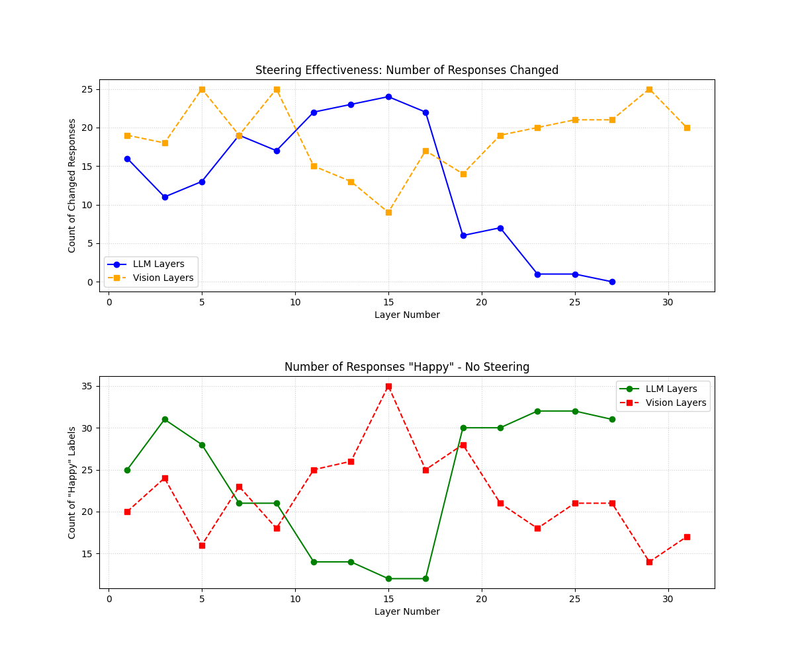

Steering abstract concepts into Vision-Language Models — do images act as steering signals?
Activation steering is well known for text LLMs: add a direction vector to the hidden states and push the model toward a concept. This project asks whether the same works for the visual / multimodal pathway of a Vision-Language Model — can an image-derived steering vector inject an abstract concept (an emotion or a weather mood) into the model's output without changing the input pixels or the model weights?
The method computes a batch-averaged steering vector as mean(activations on concept images) − mean(activations on neutral images), then injects it at a chosen transformer layer during generation, scaled by a strength α. Two model components are probed independently: the LLM (language) layers and the Vision encoder layers.
Both datasets are pulled automatically via kagglehub on first run (see Load_dataset.py).
Click a stage to see what the real code does.
vec = repr(concept_img, L)
− repr(neutral_img, L)
steering_vector = mean(vecs) # over N=10 pairs
From get_averaged_steering_vector(). Images are resized to 336×336; the layer representation is captured by a forward hook on the chosen layer (get_layer_representation).
def insertion_hook(module, inp, out):
hs = out[0]
# interpolate vector to seq len
modified = hs + (alpha * target_v)
return (modified,) + out[1:]
From generate_with_vector_insertion(). The vector is length-matched to the current sequence with F.interpolate; LLM steering is skipped during single-token decode steps (prefill-only).
The same code targets two very different model families. get_target_layers() resolves the right module list:
Baseline (unsteered) vs. steered generations, copied verbatim from the repo's JSON results. Pick an example:
Examples are read directly from json_results/ and json_results_emotions/. vector_norm is the L2 norm of the steering direction at that layer; in the Controlled Hallucination examples the input is a blank noise image, so any concept content in the steered text is injected, not observed.
Effectiveness is measured as a keyword-match rate: does the steered description contain concept keywords that the unsteered baseline does not. Results are reported per model, per concept, and swept across layers and α.




# run both experiments across configured models python VLM_experiments.py # regenerate figures python visualize.py python baseline_analysis/plot_baseline_comparison.py
→ GilCaplan/Adversarial_ML_2360207 on GitHub
The repo also ships a project proposal PDF and a write-up (VLM_Steering-7.pdf).